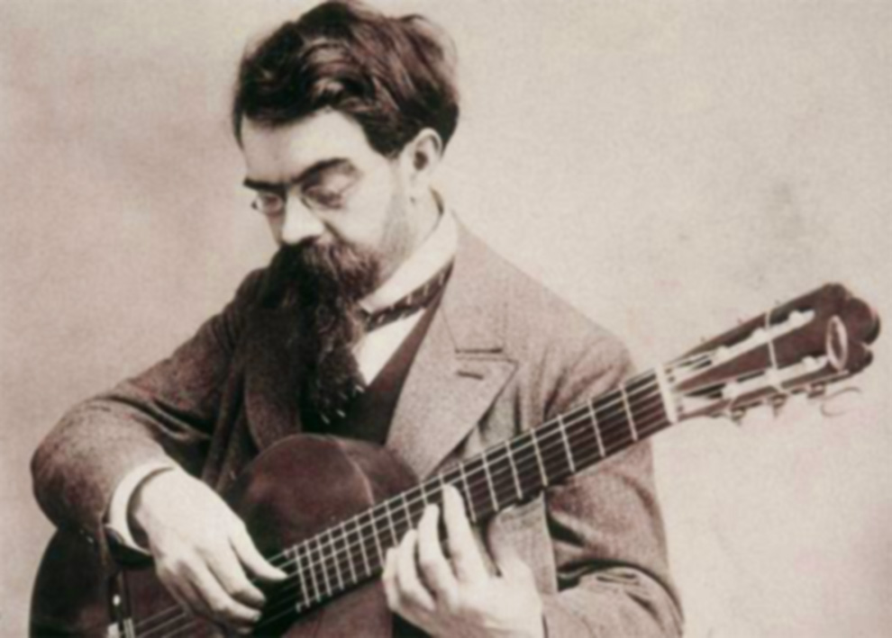
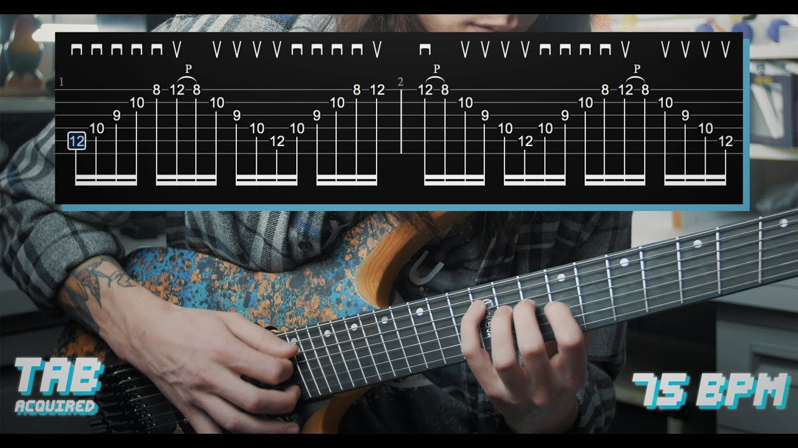

Francisco de Asís Tárrega y Eixea was a Spanish composer and classical guitarist of the Romantic period. He is known for such pieces as Recuerdos de la Alhambra. He is often called "the father of classical guitar" and is considered one of the greatest guitarists of all time.Francisco Tárrega composed 78 original scores and 120 transcriptions – mostly for his own use. As with several of his Spanish contemporaries, such as his friend Isaac Albéniz, he had an interest in combining the prevailing Romantic trend in classical music with Spanish folk elements, and transcribed several of Albéniz's piano pieces. The contemporary guitarist and composer Angelo Gilardino has written that Tárrega's 9 Preludios are "... the deepest musical thought of Tárrega in the most concentrated form." He is also the composer of Gran Vals, an excerpt of which was used in the iconic Nokia ringtone.
Sweep picking is a guitar playing technique. When sweep picking, the guitarist plays single notes on consecutive strings with a 'sweeping' motion of the pick, while using the fretting hand to produce a specific series of notes that are fast and fluid in sound. Both hands essentially perform an integral motion in unison to achieve the desired effect. The technique was first used and developed by jazz guitarists Les Paul, Chet Atkins, Tal Farlow and Barney Kessel in the 1950s, as well as rock guitarists Jan Akkerman, Ritchie Blackmore and Steve Hackett in the 1970s. In the 1980s, sweep picking became widely known for its use by shred guitarists including Yngwie Malmsteen, Jason Becker, Tony MacAlpine and Marty Friedman. Jazz fusion guitarist Frank Gambale released several books and instructional videos about the technique, of which the most well-known is Monster Licks & Speed Picking in 1988.
